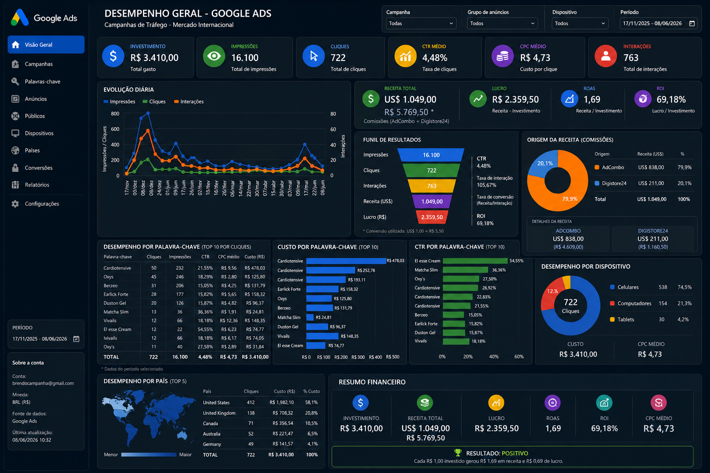
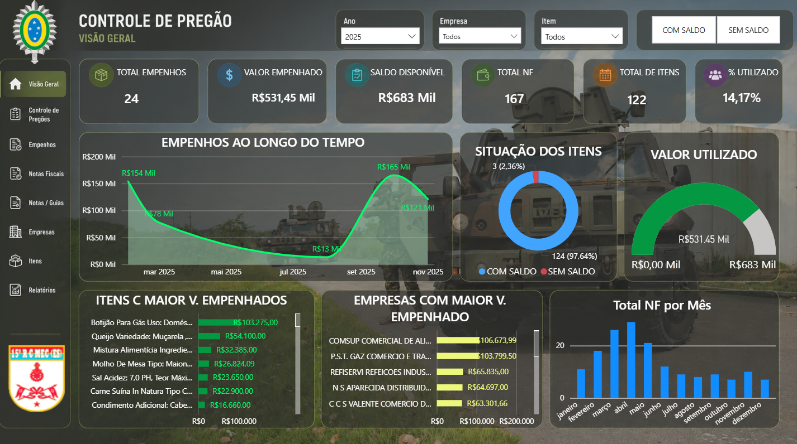
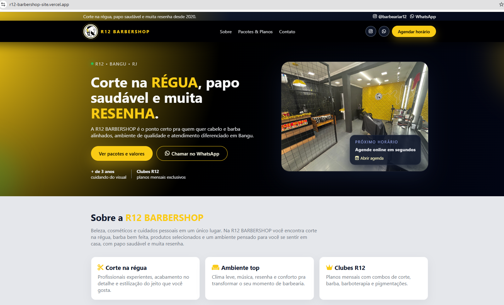

Computação em Nuvem
Powered by Google Cloud
Graduação em andamento pela Universidade Cruzeiro do Sul, com foco em infraestrutura em nuvem, tecnologia, soluções escaláveis e fundamentos de computação moderna.
Conclusão prevista: 12/2027Front-End • Power BI • Oracle PL/SQL • Dados
Transformando dados, código e tecnologia em soluções digitais que geram resultados reais.
Sou Marlon Santos, profissional apaixonado por tecnologia, com experiência prática em Desenvolvimento Web, Business Intelligence e Banco de Dados.
Possuo formação concluída em Power BI, Inteligência Artificial e Oracle PL/SQL, além de atuar no desenvolvimento de projetos reais, como dashboards analíticos e sites institucionais.
Atualmente continuo minha formação no curso de Desenvolvedor Full Stack Python pela EBAC, aprofundando conhecimentos em desenvolvimento backend, APIs, banco de dados e arquitetura de aplicações.
Power BI concluído
Projetos práticos
Tecnologias estudadas
Estou construindo uma base sólida em desenvolvimento web, dados e computação em nuvem, combinando formação acadêmica, cursos técnicos e projetos práticos.
Graduação em andamento pela Universidade Cruzeiro do Sul, com foco em infraestrutura em nuvem, tecnologia, soluções escaláveis e fundamentos de computação moderna.
Conclusão prevista: 12/2027Formação em andamento com foco em Front-End, JavaScript, automação, Python, SQL, Django, APIs, Docker e integração contínua.
Conclusão prevista: 06/2026Formação concluída com foco em Power BI, Power Query, DAX, modelagem dimensional, dashboards interativos e storytelling com dados.
Curso concluído Ver CertificadoFormação concluída abordando fundamentos de IA, aplicações práticas, análise de dados e uso de ferramentas inteligentes para resolução de problemas.
Curso concluído Ver CertificadoFormação concluída com foco em SQL e programação PL/SQL, incluindo procedures, functions, triggers, packages, cursores e tratamento de exceções.
23,5 horas • Curso concluído Ver CertificadoTypeScript, VueJS, React, CSS-in-JS, Redux, React Testing Library e Cypress.
Variáveis, estruturas de dados, funções, programação funcional, POO, módulos e tratamento de erros.
DDL, DML, relacionamentos entre tabelas, agregações, índices e performance de leitura.
Django, models, views, admin, templates, Rest API e Django Rest Framework.
Docker, imagens, containers, Docker Network, integração contínua e Continuous Delivery.
Criação de dashboards interativos, modelagem de dados, ETL, DAX, Power Query e visualizações voltadas para tomada de decisão.

Dashboard desenvolvido para análise de campanhas internacionais, acompanhando investimento, cliques, impressões, CTR, CPC, receita, lucro, ROI e ROAS.
Power BI • Google Ads • Marketing Analytics
Dashboard para acompanhamento de empenhos, saldo disponível, fornecedores, notas fiscais e indicadores administrativos.
Power BI • DAX • Power QuerySite profissional desenvolvido para apresentação de serviço de nutrição, com foco em atendimento individual, plano guiado, autoridade profissional e captação de clientes.
HTML • CSS • JavaScript • Landing Page Ver projeto online
Site institucional desenvolvido para barbearia, com apresentação dos serviços, pacotes, identidade visual, botão de WhatsApp e foco em agendamento online.
HTML • CSS • JavaScript • Vercel Ver projeto onlineInterfaces modernas, responsivas e organizadas.
Dashboards estratégicos para tomada de decisão.
Análise de campanhas, métricas e retorno.
Consultas, programação PL/SQL e manipulação eficiente de dados.
Estou sempre aberto a novas oportunidades e desafios. Entre em contato comigo através de qualquer um dos canais abaixo.
marlondesenvolvedor@hotmail.com
Marlon Santos
+55 21 96551-9821